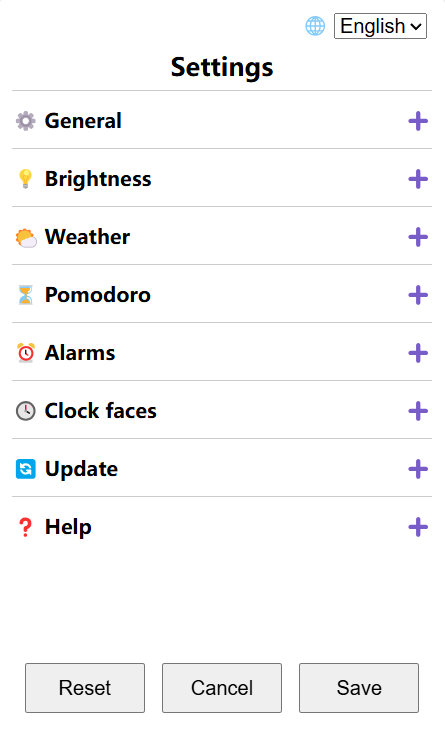

Settings
Select “Settings” in menu

Press right buttton ⊙ to turn on/off settings server.
Go to the settings web page by scaning the QR code on your device or visiting the URL below it.
You can expend sections by clicking the “+” sign, modify settings then click “Save” button at the bottom.
Or you can mess around and click “Cancel” button before new settings are saved.
The “Reset” button will factory reset the device.
Tip
For convenience, you can add the settings web page to home screen.